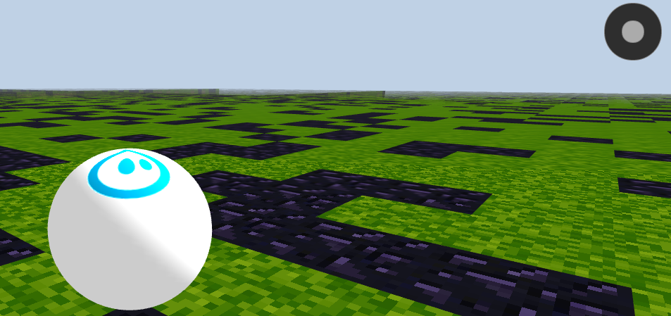

Spheros and NodeJS
Overview of working with Spheros and NodeJS

my experience so far
Node Knockout 4
node-sphero
The good
- Decent publicity
- At first appearance, good consistent API
- Notable author
node-sphero
The bad
- Out of date, required an old version of node-serialport that would not compile on NodeJS v0.10.x
- Couple of odd assumptions on controlling multiple bots
- Main classes behind a factory !== extensible
- Poor examples
spheron
The good
- More recently updated
- compiled on v0.10.x
- Included an awesome video combining spheron and a Leap Motion! )no example code ;(
sphero
The bad
- Poor examples
- Not the best interface, sort of an odd psuedo-pubsub and code style feels 'cramped'
cylonjs-sphero
The good
- written in coffee-script?
- Appears to have Arduino like execution loop
cylonjs-sphero
The bad
- written in coffee-script
voxel-sphero
voxel-sphero
done
- basic implementation of voxel entity
- externally controlled movement
- Can control real sphero
not done
- no real API yet
- rotational velocity questionable
simple-sphero
- Aims to be a dead simple API
- left/right/forward commands to control your Sphero
- Automagical handling of async operations through chained API
- Can change LED color and toggle backlight
- Keeps track of battery status
Goal, Project, The Future
- S.L.A.M.
- Maze Solver
- Bot guide/visual assistant